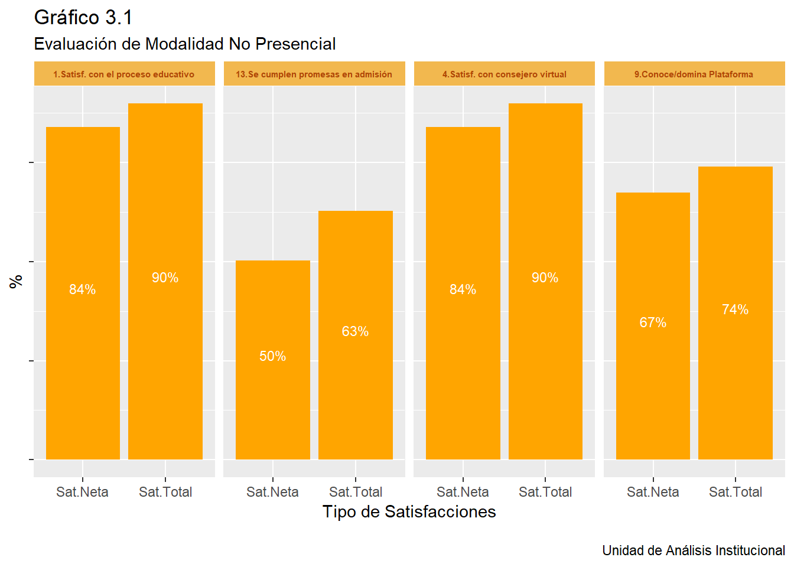

Capítulo 3 Resultados Carreras No Presenciales
A continuación se muestran los resultados 2018-2 de encuesta de servicios aplicados a estudiantes en modalidad no presencial del Instituto. En primer lugar, se muestran los resultados globales en aquellas variables que sintetizan de mejor forma la percepción de los estudiantes y, en segundo lugar, los resultados de dimensiones específicas de la modalidad, mostrando los resultados en cuanto atributos varios.
En el siguiente gráfico, se muestran los resultados 2018-2 de indicadores de E-Learning. Se muestran los dos tipos de satisfacción con los cuales opera el Instituto; total y neta. Se puede apreciar que dos de los 4 aspectos donde el jor desempeño es más alto, corresponden a ámbitos ligados directamente con el proceso educativo: “Satisfacción con proceso educativo” y “Satisfacción con cosejero virtual”. Más atrás se encuentran dos ámbitos auxiliares al proceso educativo, por un lado “el conocimiento/domino de plataforma Moodle” (sat.neta; 67%), y por otro, y claramente más rezagado, se encuentra el grado de “cumplimiento de las promesas hechas por admisión al momento de matricularse” (sat.neta: 50%).

En relación a las gestión de los docentes, se evaluaron los siguientes atributos correspondientes al servicio de tutorías. Si se considera la magnitud de la nota más alta (nota 7), se aprecia que dos de los atributos mejor evaluados, corresponden a “Atención del tutor” y “Disponibilidad del tutor”, 49% y 48%, respectivamente. Por el contrario, dos aspectos bajos corresponden a “Claridad de las respuestas” y “Rapidez de las respuestas”; 33% y 32%, respectivamente. En estos últimos aspectos, aparece un porcentaje más alto en notas intermedias, como 4 y 5.
En relación a la gestión realizada por tu consejero virtual, se evaluaron los siguientes atributos correspondientes al servicio entregado. Se puede apreciar una satisfacción alta (sobre el 85% de estudiantes optan por nota 6 ó 7) en los tres atributos consultados: “Apoyo entregado en el proceso académico”, “Rapidez de respuesta” y “Claridad de respuesta”.
En relación al proceso educativo, se evaluó a continuación los siguientes atributos: “Motivación para estudiar cada día”, “Actividades complementarias”, “Actividades Prácticas” y “Colaboración de mis Compañeros”. En cada uno de ellos se registra un valor donde -al menos- el 85% de estudiantes optan por nota 6 ó 7. Como elemento diferencial, hay un 10% de estudiantes que ponen una nota entre 1 a 3 en el aspecto de “colaboración de mis compañeros”.
En relación a la plataforma, se evaluaron los siguientes atributos: “Funcionamiento General”, “Facilitad para estudiar”, “Accesibilidad”, “Contenidos Académicos Disponibles”, “Utilidad de Video Clases”, “Utilidad de Foros” y “Acceso E-books”. Si se suma el porcentaje de estudiantes que ponen nota 6 o 7, el valor sobrepasa el 70% en cada atributo medido.